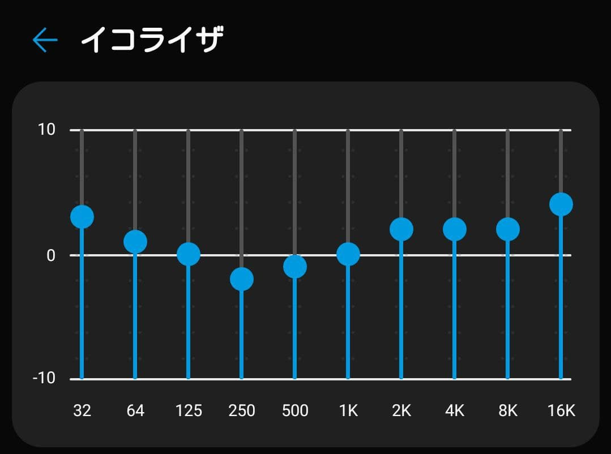
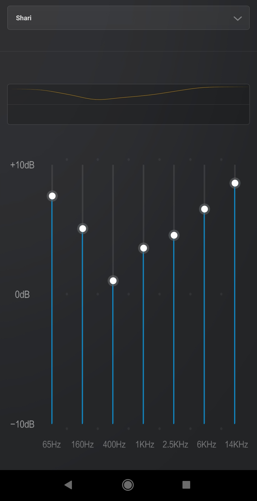
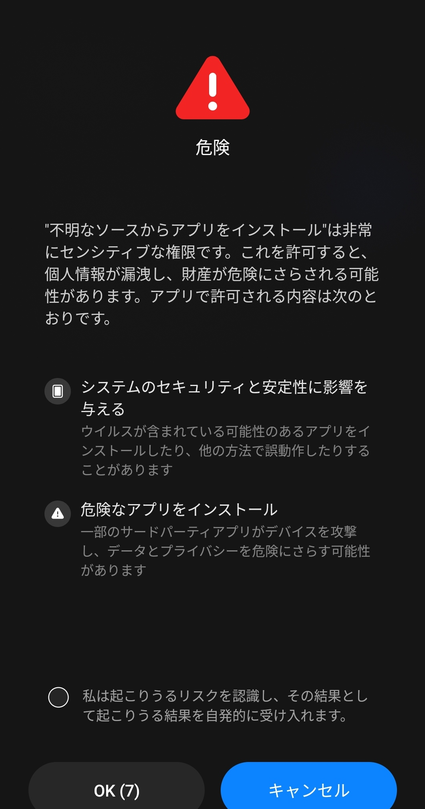

安い,早い,美味さは微妙?(MIUIの癖による)
昨日到着したMi11 Liteの私的レビューです
全般的なものは
androplusさんのレビュー が詳しいので
気になるところを上げていこうという奴です
なんで買った?
-
メーンのG8X Thinq(以下,G8X)がそろそろ微妙な電池もちになってきた
(一日持たすのが限界) -
サブとして使ってたRedmi Note 9S 4/64(以下,RN9S)が突然画面映らなくなったので
どうせならスペ上げようかと -
バッテリーもデカイしコスパ最強と言われてきてるので
インプレッション
動作
軽い
ゲームはせずSNSと動画見るぐらいの使い方なので引っかかりとか感じる場面もない
RN9SだとTwitch(PinP)とブラウジングでロード引っ掛かったり
メモリ4GBを食い尽くしそうなときもあってキツかったがそういう引っ掛かりはない
その他
指紋もサイドでここはRN9Sと変わらず
感度も指の第一関節より数mm上だけ乗っけてもミスなく通してくれるのでかなり良し
気にしてる点
イヤホンの音質傾向
そもそも3.5mmがないことを買ってから気づいた
中に標準でCto3.5mmは付いてるけどコレ多分DACないやーつだよなぁ…
G8Xにした理由がジャックの音質なのでどこまでマトモになってるのか気になってた
音質の体感
ER4SRでSpotifyを使って適当にDaily Mixを聴いての感覚
-
G8X: ちょっとこんもりしてるけど音場はそれなりにあって高音もそれなり(デフォ)
→イコライザで高音は伸びるけど低音削りすぎたかなぁ… -
Mi11 Lite:ややカマボコの低音にそれなりの定位感がある(デフォ)
→イコライザで低音の定位感はなくなるけど高音はそんなに伸びてこない
イコライザの設定は両者こんなの


MIUIの癖
きになる点は何個か…
-
ナビゲーションバーのボタン配置が逆 (いつもの)
-
ダークテーマがフォースダークオーバーライドになる
RN9Sでもそうしてたから構わないといえばそうなんだけど
バーコード決済のときあれこれ戻さないと駄目?になりがちだったのはある -
新規アプリから不明なアプリインストール時危険の画面が差し込まれる
一番引っかかってる仕様はこれ
ブラウザーであれその他ファイラーで新規許可設定を入れると↓が毎回挿入されてる

まとめ
コスパ最強の名には恥じないかな カメラも悪くはないらしいし(一枚も撮ってない)
MIUIの挙動的に気になったりした点はあるけど私的にはギリギリ許容できるかな…?の範囲
ただジャックの音質は…?なのでそこはG8X続投かね